- Works
- 13
- Documents
- 29
- Awards
- 5
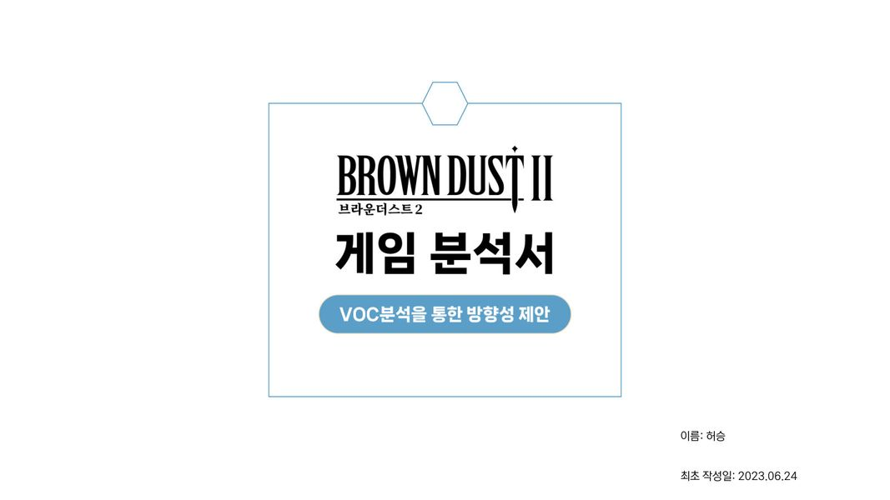
브라운더스트2 게임 분석서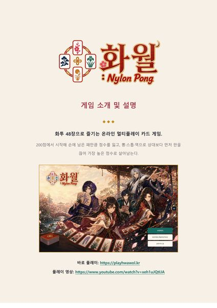
화월 : Nylon Pong 게임 소개서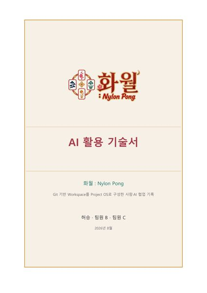
화월 : Nylon Pong AI 활용 기술서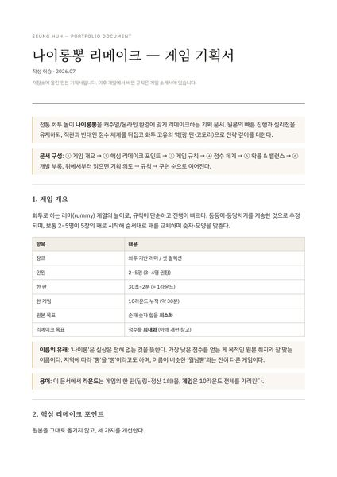
나이롱뽕 리메이크 — 게임 기획서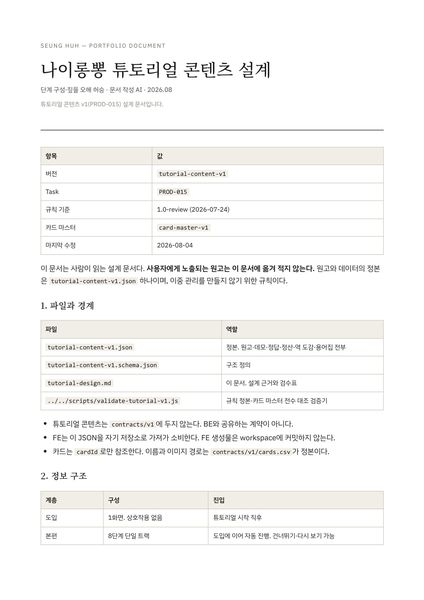
나이롱뽕 튜토리얼 콘텐츠 설계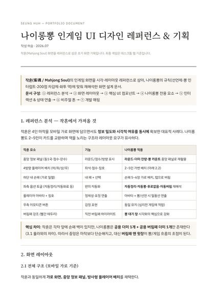
나이롱뽕 인게임 UI 디자인 레퍼런스 & 기획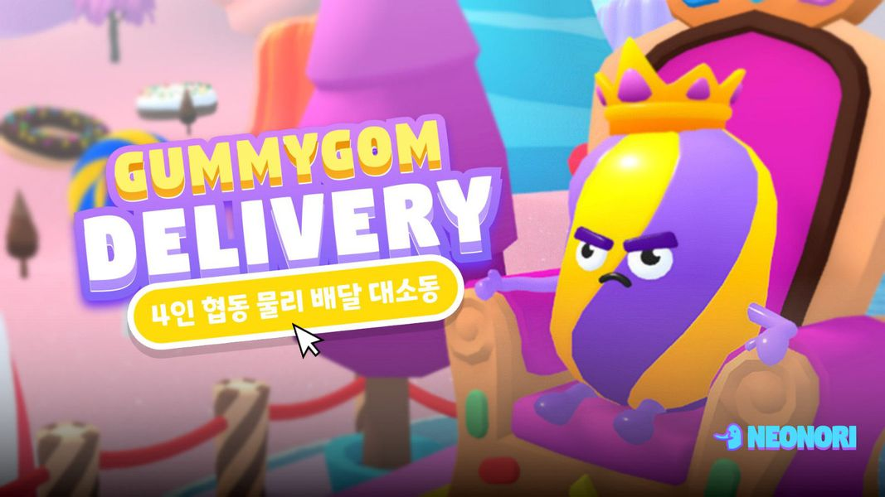
GummyGom Delivery 게임 소개 (팀 발표자료)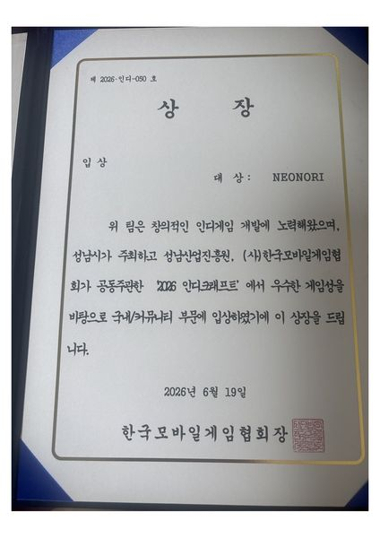
2026 인디크래프트 국내/커뮤니티 부문 입상 상장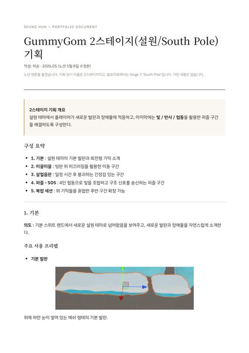
GummyGom 설원(South Pole) 스테이지 기획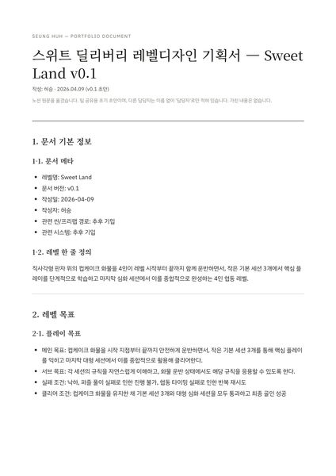
스위트 딜리버리 레벨디자인 기획서 — Sweet Land v0.1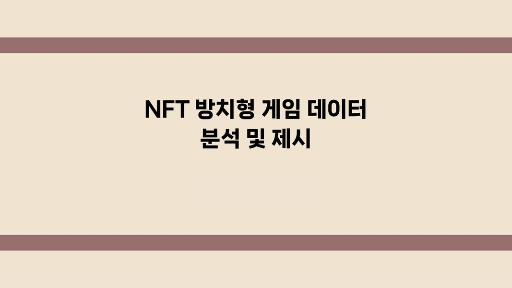
NFT 방치형 게임 데이터 분석 및 제시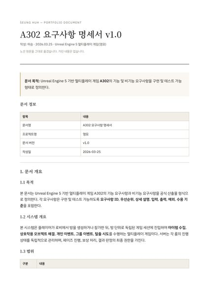
A302 요구사항 명세서 v1.0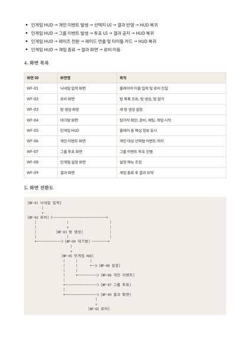
A302 기획 문서(와이어프레임) v1.0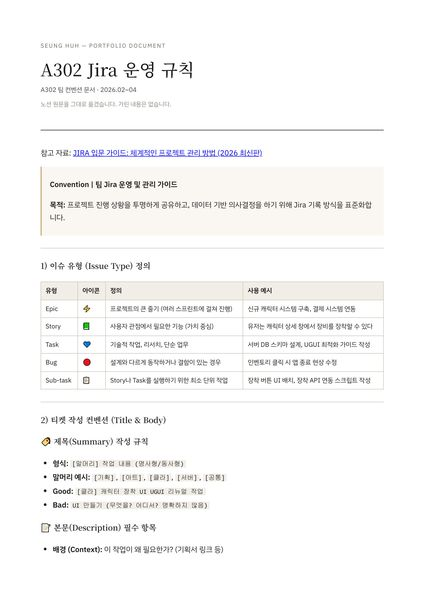
A302 Jira 운영 규칙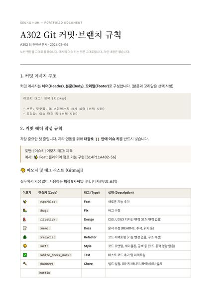
A302 Git 커밋·브랜치 규칙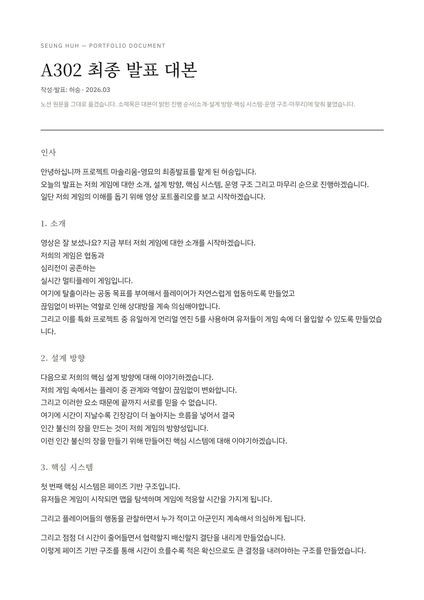
A302 최종 발표 대본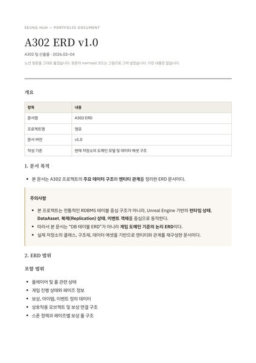
A302 ERD v1.0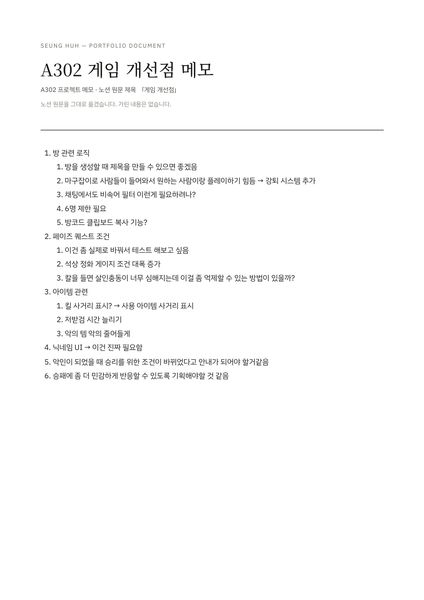
A302 게임 개선점 메모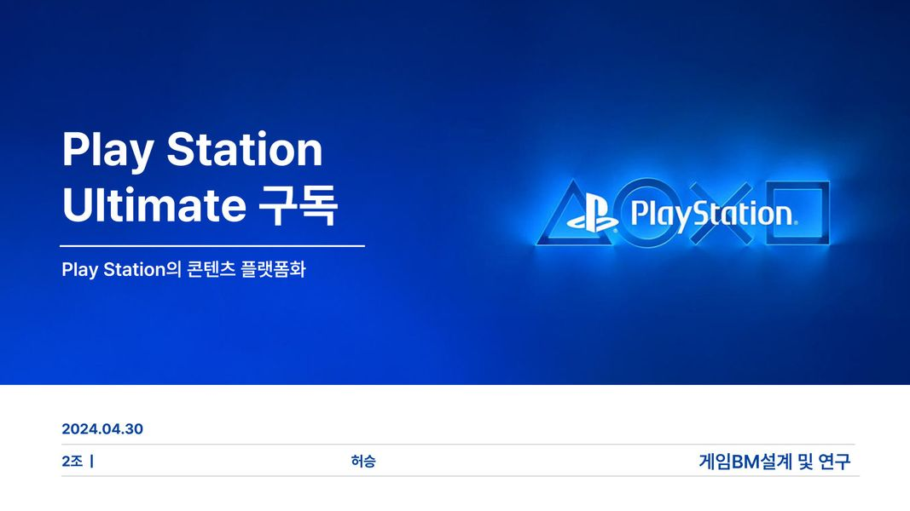
PlayStation Ultimate 구독 기획안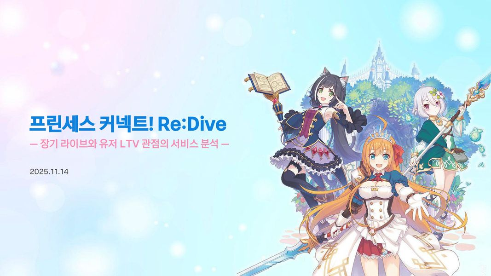
프린세스 커넥트! Re:Dive 서비스 분석서- 스타시드: 아스니아 트리거 분석
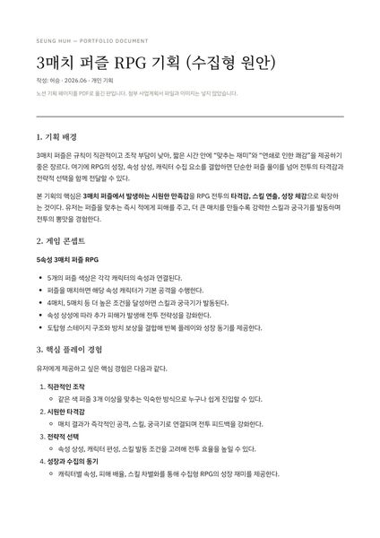
3매치 퍼즐 RPG 기획 (수집형 원안)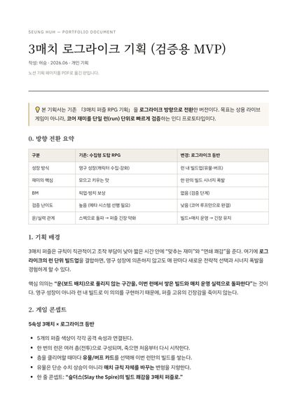
3매치 로그라이크 기획 (검증용 MVP)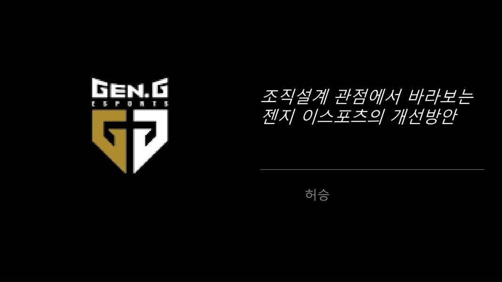
조직설계 관점에서 바라보는 젠지 이스포츠의 개선방안 (발표)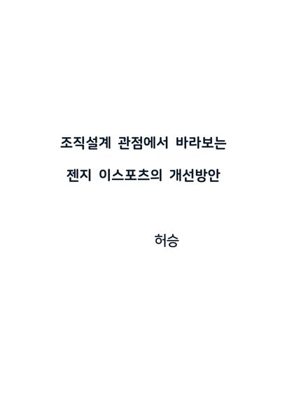
조직설계 관점에서 바라보는 젠지 이스포츠의 개선방안 (책)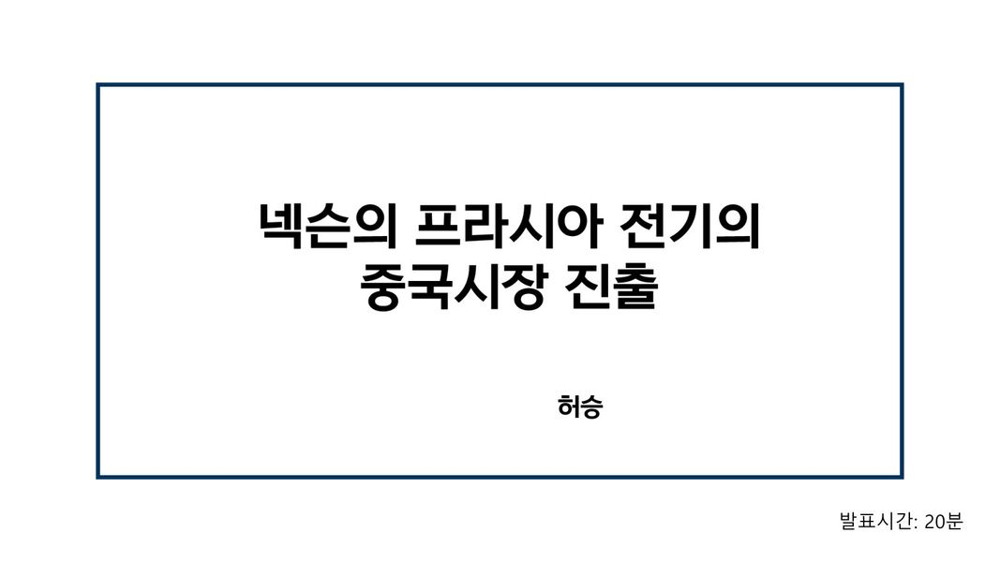
넥슨 프라시아 전기의 중국 시장 진출 — 기말 발표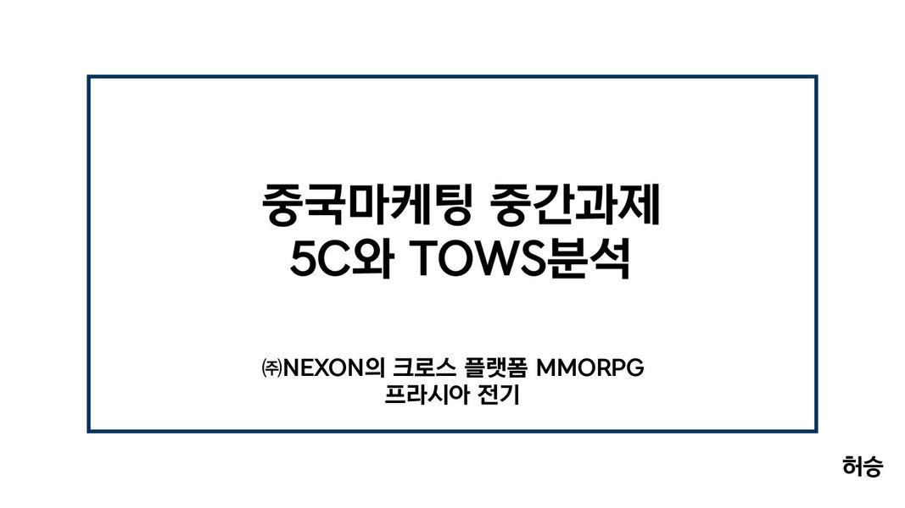
프라시아 전기 5C·TOWS 분석 — 중국마케팅 중간과제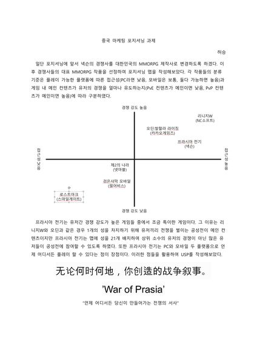
프라시아 전기 포지셔닝 맵과 USP — 중국마케팅 과제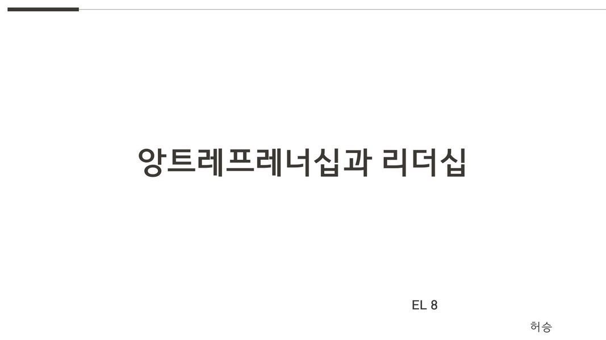
청소년 게임 과몰입 해결 방안 (앙트레프레너십과 리더십 8조 발표)
Education
2025.07.08 – 2026.06.03삼성청년SW·AI아카데미(SSAFY) 14기1,725시간 · SW·AI 기초부터 실전 프로젝트까지. Java·Spring Boot·MySQL·Vue 기반 웹 서비스 팀 프로젝트GummyGom Delivery →UE5 멀티플레이 게임 →
2022.05.23 – 2022.08.13이스포츠 마스터 트랙 — 젠지 글로벌아카데미80시간 · 이스포츠 구단 운영에 필요한 마케팅·스폰서십 실무와 구단 직무 기반 프로젝트
2017.03 – 2025.08성균관대학교 경영학과졸업
Awards · 5
2026.06.19 · 한국모바일게임협회2026 인디크래프트 국내/커뮤니티 부문 입상GummyGom Delivery · 팀 NEONORIGummyGom Delivery →상장 보기 →
2026.06.02 · 삼성전자(삼성청년SW·AI아카데미)SSAFY 프로젝트 전시발표회 우수상 (전시부문 3등)GummyGom Delivery · 팀GummyGom Delivery →
2026.05.21 · 삼성전자(삼성청년SW·AI아카데미)SSAFY 자율 프로젝트 우수상 (서울 6반 1등)GummyGom Delivery · 팀GummyGom Delivery →
2023.05 · 성균관대학교성균관대학교 실패축제 The Real Team상'3시간 이내에 수익 창출하기' 프로젝트
2022.08.13 · 젠지 글로벌아카데미이스포츠 마스터 트랙 스폰서십 부문 3위'The Next SBXG' — 게임 구단 네이밍 스폰서십 제안 · 팀
Certifications · Languages
2026.03.06ADsP (데이터분석 준전문가)
2025.06.23OPIc 영어 IM2
2025.06.22MOS Word 2016 Expert
2025.06.21MOS PowerPoint 2016
2024.08.13JLPT N3